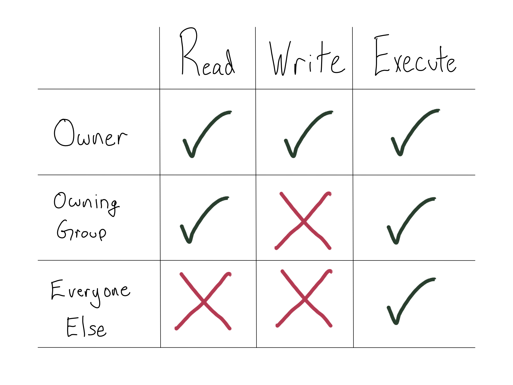
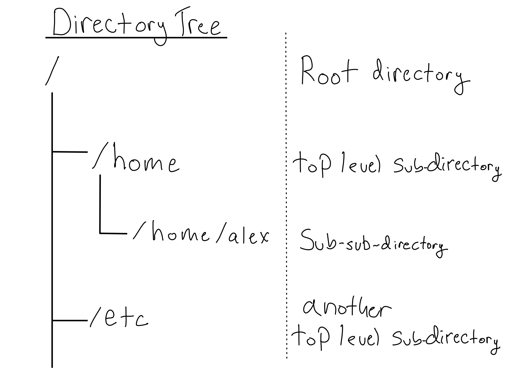

9 Intro to Linux Administration
You’re used to interacting with a computer and a phone running MacOS or Windows or iOS or Android. But most servers don’t run any of those.
Outside of personal computers and phones, Linux is the world’s predominant operating system (OS). Almost all of the world’s embedded computers – in ATMs, cars and planes, TVs, smart thermostats, and most other gadgets and gizmos – Linux. Android actually is Linux, as is ChromeOS. Basically all of the world’s supercomputers run Linux.
Most importantly for our purposes, a majority of the world’s servers also run on Linux.1
So in order to administer a server, you’re going to have to learn a little about Linux. In this chapter, you’ll learn about the history of Linux and about how to navigate and manipulate a server running Linux.
9.1 A brief history of Linux
A computer’s OS defines how applications can interact with the underlying hardware. OSes dictate how files are stored and accessed, how applications are installed, how network connections work, and more.
Your laptop probably runs MacOS or Windows. Neither of them is Linux. But Linux is dominant basically everywhere else. Because it’s an open source OS and in order to accommodate that huge variety of use cases and contexts, Linux comes in a wide variety of “flavors” that differ by technical attributes and licensing model. These flavors are called distros, short for distributions.
Before the early 1970s, the market for computer hardware and software looked nothing like it does now. Computers of that era had extremely tight linkages between hardware and software. For example, there was no Microsoft Word you could use on a Dell machine or an HP machine or an Apple machine.
Instead, every hardware company was also a software company. If Example Corp’s computer did text editing, it was because Example Corp had written (or commissioned) text editing software specifically for their machine. If Example Corp’s machine could run a game, Example Corp had written that game just for their computer.
Then, in the early 1970s, researchers funded by AT&T’s Bell Labs released Unix – the first operating system. Now, there was a piece of middleware that sat between the computer hardware and the end-user software.
After the advent of the OS, the computer market started looking a lot more familiar to 2020s eyes. Hardware manufacturers could build machines that ran Unix and software companies could write applications that ran on Unix.
The one issue (for everyone but Bell Labs) was that they were paying Bell Labs a lot of money for licenses to Unix. So in the 1980s, programmers started writing Unix-like OSes. These so-called Unix clones behaved just like Unix, but didn’t include any actual Unix code.2
In 1991, Linus Torvalds – then a 21 year-old Finnish grad student – released an open source Unix clone called Linux via a amusingly nonchalant newsgroup posting, saying, “I’m doing a (free) operating system (just a hobby, won’t be big and professional like gnu)…Any suggestions are welcome, but I won’t promise I’ll implement them :-).”3
Obviously, the Linux project outgrew that modest newgroup post. At this point there are over 600 Linux distros, reflecting both the natural fragmentation of popular open source projects, as well as disparate requirements for an OS for your car’s infotainment system versus a smartphone versus the controller for your smart thermostat.
Luckily, you don’t have to know hundreds of distros. For server use, most organizations standardize on one of a handful. The most common open source distros are Ubuntu or CentOS. Red Hat Enterprise Linux (RHEL) is the most common paid distro.4 Many organizations on AWS are using Amazon Linux, which is independently maintained by Amazon but was originally a RHEL derivative.5
Most individuals who have a choice in the matter prefer Ubuntu. It’s definitely my personal preference. It’s a little simpler and easier to configure than the others.
Ubuntu versions are numbered by the year and month they were released. Most people use the Long Term Support (LTS) releases, which are released in April of even years.
Ubuntu versions have fun alliterative names, so you’ll hear people refer to releases by name or version. As of this writing, most Ubuntu machines are running Bionic (20.04, Bionic Beaver) or Jammy (22.04, Jammy Jellyfish).
9.2 Bash basics
Linux is administered from the command line using bash or a bash alternative like zsh. The philosophy behind bash and its derivatives says that you should be able to accomplish anything you want with small programs invoked via a command. Each command should do just one thing, and complicated things should be accomplished by composing commands – taking the output from one as the input to the next.
Invoking a command is done by typing the command on the command line and hitting enter. If you ever find yourself stuck in a situation you can’t seem to exit, ctrl + c will quit in most cases.
Helpfully, most bash commands are an abbreviation of the word for what the command does. Unhelpfully, the letters often seem somewhat random.
For example, the command to list the contents of a directory is ls, which sorta makes sense. Over time, you’ll get very comfortable with the commands you use frequently.
Bash commands can be modified to behave the way you need them to.
Command arguments provide details to the command. They come after the command with a space in between. For example, if I want to run ls on the directory /home/alex, I can run ls /home/alex on the command line.
Some commands have default arguments. For example the default argument for the ls command is the current directory. So if I’m in /home/alex, I’d get the same thing from either ls or ls /home/alex.
Options or flags modify how the command operates and come between the command and arguments. Flags are denoted by having one or more dashes before them. For example, ls allows the -l flag, which displays the output as a list. So, ls -l /home/alex would get the files in /home/alex as a list.
Some flags themselves have flag arguments. For example, the -D flag allows specifying a format for how the datetime is displayed from ls -l. So running ls -l -D %Y-%m-%dT%H:%M:%S /home/alex lists all the files in /home/alex with the date-time of the last update formatted in ISO-8601 format, which is always the correct format for dates.
Bash commands are always formatted as <command> <flags + flag args> <command args>.
It’s nice that this structure is standard. It’s not nice that the main argument is all the way at the end, because it makes long bash commands hard to read. To make commands more readable, you can break the command over multiple lines and include one flag or argument per line. You can tell bash you want it to continue a command after a line break by ending the line with a space and a \.
For example, here’s that long ls command more nicely formatted:
All of the flags and arguments for commands can be found in the program’s man page (short for manual). You can access the man page for any command with man <command>. You can scroll the man page with arrow keys and exit with q.
Bash is a real – if ugly – programming language, so you can assign variables with <var-name>=<value> (no spaces allowed) and access them $<var-name>. The bash version of print is echo.
For example,
For the most part, you’ll write commands directly on the command line. It’s also possible to write and run bash scripts that include conditionals, loops, and functions. Bash scripts usually end in .sh and are most often run with the sh command like sh my-script.sh.
The advantage of writing bash scripts is that they can run basically anywhere. The disadvantage of writing bash scripts is that bash is a truly ugly programming language that is hard to debug.
9.3 Commands run on behalf of users
Whenever a program is running in Linux, it is running as a particular user who can be identified by their username.
On any Unix-like system, the whoami command returns the username of the active user. So when I run whoami on my MacBook, I get:
Usernames have to be unique on the system – but they’re not the true identifier for a user. A user is uniquely identified by their user id (uid), which maps to all the other user attributes like username, password, home directory, groups, and more. The uid for a user is assigned at the time the user is created and usually don’t need to be changed or specified manually.6
Each human who accesses a Linux server should have their own account. In addition, many applications create service account users for themselves and run as those users. For example, installing RStudio Server will create a user with username rstudio-server. Then, when RStudio Server goes to do something – start an R session for example – it will do so as rstudio-server.
User uids start at 10,000 with those below 10,000 reserved for system processes. There’s also one special user – called the admin, root, sudo, or super user who gets the special uid 0.
Users belong to groups, which are collections of one or more users. Each user has exactly one primary group and can be a member of secondary groups.7 By default, each user’s primary group is the same as their username.
Like a user has a uid, a group has a gid. User gids start at 100.
You can see a user’s username, uid, groups, and gid with the id command. On my MacBook, I’m a member of a number of different groups, with the primary group staff.
Terminal
> id
uid=501(alexkgold) gid=20(staff) groups=20(staff),12(everyone),61(localaccounts),79(_appserverusr),80(admin),81(_appserveradm),98(_lpadmin),701(com.apple.sharepoint.group.1),33(_appstore),100(_lpoperator),204(_developer),250(_analyticsusers),395(com.apple.access_ftp),398(com.apple.access_screensharing),400(com.apple.access_remote_ae)If you ever need to add users to a server, the easiest way is with the useradd command. Once you have a user, you may need to change the password, which you can do at any time with the passwd command. Both useradd and passwd start interactive prompts, so you don’t need to do much more than run those commands.
If you ever need to alter a user – the most common task being to add a user to a group, you would use the usermod command with the -aG flag.
9.4 Permissions dictate what users can do
In Linux, everything you can interact with is just a file. Every log – file. Every picture – file. Every application – file. Every configuration – file.
So determining whether a user can take an action is really a question of whether they have the right permissions on a particular file.
Basic Linux permissions (called POSIX permissions) consist of a 3x3 matrix of read, write, and execute for the owner, the owning group, and everyone else. Read means the user can see the contents of a file, write means the user can save a changed version of a file, and execute means they can run the file as a program.
There are more complex ways to manage Linux permissions. For example, you might hear about Access Control Lists (ACLs). They’re beyond the scope of this book.
There is more information on different ways organizations manage users and what they’re allowed to do in Chapter 17, which is all about auth.
For example, here’s a set of permissions that you might have for a program if you wanted anyone to be able to run it, group members to inspect it, and only the owner to change it.

Directories also have permissions – read allows the user see what’s in the directory, write allows the user to alter what’s in the directory, and execute allows the user to enter the directory.
File permissions and directory permissions don’t have to match. For example, a user could have read permissions on a directory, so they could see the names of the files, but not actually have read permissions on any of the files, so they can’t look at the contents.
When you’re working on the command line, you don’t get a little grid of permissions. Instead they’re expressed in one of two ways. The first is the string representation, which is a 10-character string that looks something like -rw-r–r--.
The first character indicates the type of file: most often - for normal (file) or d for a directory.
The next nine characters are indicators for the three permissions for the user, the group, and everyone else. There will be an r for read, a w for write, and an x for execute or - to indicate that they don’t have the permission.
So the permissions in the graphic would be -rwxr-x--x for a file and drwxr-x--x for a directory.
The best way to get these permissions is to run the ls -l command.
Terminal
Each line starts with the string representation of the permissions followed by the owner and group so you can easily understand who should be able to access that file or directory.
All of the files in this directory are owned by alexkgold. Only the owner (alexkgold) has write permission, but everyone has read permission. In addition, there’s a tests directory, with read and execute for everyone and write only for alexkgold.
In the course of administering a server, you will probably need to change a file’s permissions. You can do so using the chmod command.
For chmod, permissions are indicated as a three digit number, like 600, where the first digit is the permission for the user, the second for the group, and the third for everyone else. To get the right number, you sum the permissions as follows: 4 for read, 2 for write, and 1 for execute. You can check for yourself that any set of permissions is uniquely identified by a number between 1 and 7.8
So to implement the permissions from the graphic, you’d want the permission set 751 to give the user full permissions (4 + 2 + 1), read and execute (4 + 1) to the group, and execute only (1) to everyone else.
If you spend any time administering a Linux server, you almost certainly will at some point find yourself running into a problem and applying chmod 777 out of frustration to rule out a permissions issue.
I can’t tell you not to do this – we’ve all been there. But if it’s something important, be sure you change it back once you’re finished figuring out what’s going on.
In some cases you might actually want to change the owner or group of a file. You can change users and groups with either names or ids. You can do so using the chown command. Changing users just uses the username and changing groups get prefixed with a colon.
In some cases, you might not be the correct user to take a particular action. If you want to change the user you are, you can use the su (switch user) command. You’ll be prompted for a password to make sure you’re allowed.
The admin or root user has full permissions on every file and there are some actions that only the root user can do. When you need to do root-only things, you usually don’t want to su to be the root user. It’s too powerful. Plus if you have user-level configuration, it all gets left behind.
Instead, individual users can be granted the power to temporarily assume root privileges without changing to be the root user. This is accomplished by making them members of the admin group. If a user is a member of the admin group, they can prefix commands with sudo to run those commands with root privileges.
The name of the admin group varies by distro. In Ubuntu, the group is called sudo.
9.5 The Linux Filesystem is a tree
Regardless of which Linux distro you’re running, understanding where to find things on your system is crucial.
All of the information available to a computer is indexed by its filesystem, which is made up of directories or folders, which are containers for other directories and for files.
On your laptop, you’re probably used to browsing the filesystem with your mouse. On your phone, the filesystem is completely obscured by apps, but it’s there.
On a Linux server, the only way to traverse the filesystem is with written commands. Having a good mental model for what the filesystem looks like is, therefore, really important.
On Linux, the entire filesystem is a tree (or perhaps an upside-down tree). Every directory is contained in by a parent directory, and may contain one or more children or sub-directories. The root directory, / is the base of the tree and is its own parent. A / in between two directories means that it’s a sub-directory.

Every directory is a sub-directory of / or a sub-directory of a sub-directory of / or…you get the picture. So the /home/alex file path defines a particular location, which is the alex sub-directory of /home, which is a sub-directory of the root directory, /.
It’s never necessary, but sometimes the tree-like layout for a directory is helpful. The tree utility can show you one. It doesn’t always come pre-installed, so you might have to install it.
Because the entire Linux filesystem is based at /, it doesn’t matter what physical or virtual disks you have attached to your system. They will fall somewhere under the main filesystem (often inside /mnt).
This will be familiar to MacOS users, because MacOS is based on an operating system called BSD that, like Linux, is a Unix clone.
If you’re familiar with Windows, the Linux filesystem may seem a little strange.
In Linux, each computer has exactly one filesystem, which is based at the root, /. Network shares or other types of volumes can be mounted somewhere on the filesystem, often below /mnt, but the fact that they’re on separate drives is obscured from the user.
In Windows, each physical or logical disk has its own filesystem with its own root. You’re probably familiar with C: as your main filesystem. Your machine may also have a D: drive. If you’ve got network share drives, they’re likely at M: or N: or P:.
One other difference is that Windows uses \ to separate file path elements rather than /. This used to be a big deal, but newer versions of Windows accept file paths using /.
9.5.1 Working with file paths
Whenever a command runs, it runs at a particular path in the filesystem, called the working directory. You can get the absolute path to your working directory with the pwd command, which is an abbreviation for print working directory.
When you want a command to run the same irrespective of where it’s run from, it’s best to use an absolute path, which is a path specified relative to the root. They operate the same irrespective of the current working directory. Absolute file paths are easy to recognize because they always start with /.
Sometimes it’s convenient to use a relative file path, which starts at the working directory, denoted by .. So, for example, if I want to access the data subdirectory of the working directory, that would be available at ./data.
The working directory’s parent is at ... So, you could see everything in the parent directory of your current working directory with ls .. or its parent with ls ../...
All accounts that represent actual humans should have a home directory, which usually livelive inside /home.
The home directory and all its contents are owned by the user to whom it belongs. The home directory is the user’s space to store the things they need, including user-specific configuration. When navigating the file system, the user can find their home directory is at ~.
Along with being able to inspect directories with ls, it’s useful to be able to change your working directory with the cd command, short for change directory. You can use either absolute or relative file paths with cd. So if you were in /home/alex and wanted to navigate to /home, either cd .. or cd /home would work.
Some files or directories are hidden so they don’t appear in a normal ls. You know a file or directory is hidden because its name starts with .. Hidden files are usually configuration files that you aren’t manipulating in normal usage. These aren’t secret or protected in any way, they’re just skipped by ls for convenience. If you want to display all files in a directory, including hidden ones, you can use the -a flag (for all) with ls.
You’ve already seen a couple of hidden files in this book – your GitHub Action was configured in the .github directory and your Prezto configuration was done in the .zpreztorc file. You might also be familiar with .gitignore, .Rprofile, and .Renviron.
9.6 Moving files and directories
You will frequently need to change where files are on your system, including copying, deleting, moving, and more.
You can copy a file or directory from one place to another using the cp command. cp leaves behind the old file or directory and adds the new one at the specified location. You can use the -r flag to recursively copy everything in a directory.
You can move a file with the mv command, which does not leave the old file behind. If you want to remove a file entirely, you can use the rm command. The -r (recursive) flag can be used with rm to remove everything within a directory and the -f (force) flag can skip rm double checking you really want to do this.
Be very careful with the rm command, especially with -rf.
There’s no recycle bin. Things that are deleted are instantly deleted forever.
If you want to make a directory, mkdir makes a file path. It can be used with relative or absolute file paths, and can include multiple layers of paths to create. For example, if you’re in /home/alex, you could mkdir project1/data to make a project1 directory and data sub-directory.
The mkdir command throws an error if you try to create a path that includes some directories that already exist – for example if project1 already existed in the example above. The -p flag can be handy to create only the parts of the path that don’t exist.
Sometimes it’s useful to operate on every file inside a directory. You can get every file that matches a pattern with the wildcard, *. You can also do partial matching with the wildcard to get all the files that match part of a pattern.
For example, let’s say I have a /data directory and I want to put a copy of only the .csv files inside into a new data-copy sub-directory. I could do the following:
9.6.1 Moving things to and from the server
It’s very common to have a file on your server you want to move to your desktop or vice versa. There are a few different ways to move files and directories.
If you’re moving multiple files, it’s easier to combine them into a single object and move that. The tar command turns a set of files or whole directory into a single archive file, usually with the file suffix .tar.gz. Creating an archive also does some compression. The amount depends on the content.
In my opinion, tar is a rare failure of bash to provide standalone commands for anything you need to do. tar is used to both create and unpack (extract) archive files. Telling it which one requires the use of several flags. You’ll basically never use tar without a bunch of flags and the incantation is hard to remember. I google it every time I use it. The flags you’ll use most often are in the cheatsheet in the appendix.
You can move files to or from a server with the scp command. scp – short for secure copy – is basically cp, but with an SSH connection in the middle.9
Since scp establishes an SSH connection, you need to make the request to somewhere that is accepting SSH connections. That means that whether you’re copying something to or from a server, you’ll run scp from a regular terminal on your laptop, not one that’s already SSH-ed into your server.
Regular ssh options work with scp, like -i and -v.
9.7 Pipes and redirection
You can always copy and paste command outputs or write them to a file, but it can also be helpful to just chain a few commands together. Linux provides a few handy operators you can use to make this easy.
The simplest operator is the pipe |, which just takes the output of one command and makes it the input for the next command.
For example, you might want to see how many files are in a directory. The wc -l (word count, lines) command counts lines, so you could do ls | wc -l since each file returned by ls is counted as a line.
The pipe should feel extremely familiar to R users.
The pipe from the {magrittr} package, %>%, was introduced in 2013, and is a popular part of the {tidyverse}.10 The {magrittr} pipe was inspired by both the Unix (Linux) pipe and the pipe operator in the F# programming language.
Due to its popularity, the pipe |> was formally added to the base R language in R 4.1 in 2021.
There are a few operators that write the output of the left hand side into a file.
The > command takes the output of a command on the left and writes it as a new file. If the file you specify already exists, it will be overwritten.
If you want to append the new text, rather than overwrite, >> appends to the end of the file. I generally default to >>, because it’ll create a new file if one doesn’t exist, and I usually don’t mean to overwrite what’s there.
A common reason you might want to do this is to add something to the end of your .gitignore. For example, if you want to add your .env file to your .gitignore, you could do that with echo .env >> .gitignore.11 Another great usage is to add a new public key to your .ssh/authorized_keys file.
There are times when you want to make files or directories with nothing in them. The touch command makes a blank file at the specified file path. If you touch a preexisting file, it updates the time the file was last updated without actually making any changes. This can be useful because some applications look at the timestamp on files to see if action is needed.
9.8 Comprehension Questions
- What are the parts of a bash command?
- Where do commands run? How do you know where they’re going to run or specify a relative path?
- How can you copy, move, or delete a file? What about to or from a server?
- Create a mind map of the following terms: Operating System, Windows, MacOS, Unix, Linux, Distro, Ubuntu
- What are the 3x3 options for Linux file permissions? How are they indicated in an
ls -lcommand?
9.9 Lab: Set up a user
When you use your server’s .pem key, you login as the root user, but that’s too much power to acquire on a regular basis. Additionally, since your server is probably for multiple people, you’re going to want to create users for them.
In this lab, you’ll create a regular user for yourself and add an SSH key for them so you can directly log in from your personal computer.
9.9.1 Step 1: Create a non-root user
Let’s create a user using the adduser command. This will walk us through a set of prompts to create a new user with a home directory and a password. Feel free to add any information you want – or to leave it blank – when prompted.
I’m going to use the username test-user. If you want to be able to copy/paste commands, I’d advise doing the same. If you were creating users based on real humans, I’d advise using their names.
We want this new user to be able to adopt root privileges so let’s add them to the sudo group with
9.9.2 Step 2: Add an SSH key for your new user
Let’s register an SSH key for the new user by adding the key from the last lab to the server user’s authorized_users file.
First, you need to get your public key to the server using scp.
For me, the command looks like this
Terminal
Note that I’m copying the public key, but SSH access is still using the server’s .pem key because I don’t have another key registered yet.
Now the public key is on the server, but it’s in the ubuntu user’s home directory. You’ll need to do the following:
Create
.ssh/authorized_keysintest-user’s home directory.Copy the contents of the public key you uploaded into the
authorized_keysfile (recall>>).Make sure the
.sshdirectory andauthorized_keysfiles are owned bytest-userwith700permissions on.sshand600onauthorized_keys.
You could do this all as the admin user, but I’d recommend switching to being test-user at some point with the su command.
If you run into trouble assuming sudo with your new user, try exiting SSH and coming back. Sometimes these changes aren’t picked up until you restart the shell.
Once you’ve done all this, you should be able to log in from your personal computer with ssh test-user@$SERVER_ADDRESS.
Now that we’re all set up, you should store the .pem key somewhere safe and never use it to log in again.
The remainder are mostly Windows servers. There are a few other OSes you might encounter, like Oracle Solaris. There is a product called Mac Server, but it’s just a program for managing Mac desktops and iOS devices, not a server OS.
There are also versions on Linux that run on desktop computers. Despite the best efforts of many hopeful nerds, desktop Linux is pretty much only used by professional computer people.↩︎
Or at least they weren’t supposed to. There’s an interesting history of lawsuits, especially around whether the BSD OS illegally included Unix code.↩︎
More in the History of Linux Wikipedia article.
Pedants will scream that the original release of Linux was just the operating system kernel, not a full operating system like Unix. Duly noted, now go away.↩︎
RHEL and CentOS are related operating systems, but that relationship has changed a lot in the last few years. The details are somewhat complicated, but most people expect less adoption of CentOS in enterprise settings going forward.↩︎
As I’m writing this, Amazon Linux 2 is popular, but Amazon Linux 2023 (AL2023) was recently released. I’d expect AL2023 or it’s successor to be dominant by the time you read this.↩︎
The one exception to this is when you’ve got the same user accessing resources across multiple machines. Then the
uids have to match. If you’re worrying about this kind of thing, it’s probably time to bring in a professional IT/Admin.↩︎Depending on your version of Linux, there may be a limit of 16 groups per user.↩︎
Clever eyes may realize that this is just the base-10 representation of a three-digit binary number.↩︎
It’s worth noting that
scpis now considered “insecure and outdated”. The ways it is insecure are rather obscure and not terribly relevant for most people. But if you’re moving a lot of data, you may want something faster. If so, I’d recommend more modern options likesftpandrsync. I probably wouldn’t bother if you’re only occasionallyscp-ing small files to or from your server.↩︎The title of this callout box is also the tagline for the
{magrittr}package.↩︎Note that
echois needed so that the.envgets repeated as a character string. Otherwise.envwould be treated as a command.↩︎